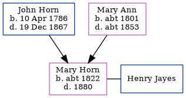

Mary Ann Jayes (née Horn) c1822 - 1880
[ Home ] | [ Calendar ] | [ Surnames Index ] | [ Errors ] | [ Family History ]A dressmaker and the child of John Horn (a labourer) and Mary Ann, Mary Horn, the three times great-aunt of Nigel Horne, was born in Margate, Kent, England c. 18221. She married Henry Jayes at St John The Baptist Church in Margate on 30 Mar 18572.
During her life, she was living at Chapel Hill in Margate on 6 Jun 18414 and on 30 Mar 18513.
She died in 1880 in Thanet, Kent, England.
Parents
- John was born on 10 Apr 1786
- Mary Ann was born c. 1801
Citations
- 1851 England Census Online publication - Provo, UT, USA: The Generations Network, Inc., 2005.Original data - Census Returns of England and Wales, 1851. Kew, Surrey, England: The National Archives of the UK (TNA): Public Record Office (PRO), 1851. Data imaged from the National
- Kent Marriages And Banns - Findmypast
- 1851 England, Wales & Scotland Census - Findmypast (was age 29 and the daughter of the head of the household)
- 1841 England, Wales & Scotland Census - Findmypast (was age 15 and the daughter of the head of the household)
Media
Kent Marriages And Banns - GBPRS-CANT-M-97023696-2
Kent Marriages And Banns - GBPRS-CANT-M-97031241-2
Family Tree
Map
Generated by ged2site. Last updated on Jul 3, 2024
Known Issues
Death date (1880) has no citations